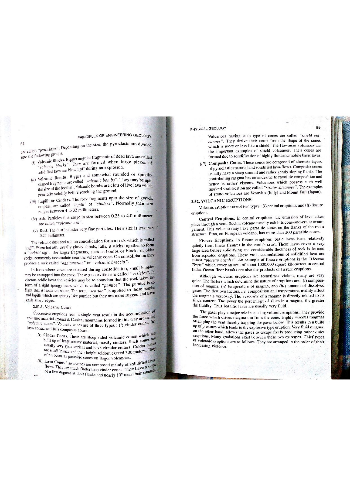

Volcanic landforms constructed around central vents display distinct topographic profiles governed by the rheology of their erupted products. When a volcano erupts alternately between explosive pyroclastic fragmentation and effusive lava flows, it constructs a monumental edifice known as a Composite Cone (or Stratovolcano).
Where $R$ is basal radius ($10-20\text{ km}$) and $H$ is elevation above baseline ($2-4\text{ km}$). The alternating competent lava sheets prevent catastrophic structural collapse of loose pyroclastic beds.

| Volcanic Edifice | Primary Composition | Internal Architecture | Slope Profile | Type Examples |
|---|---|---|---|---|
| Strato Volcano (Composite Cone) | Andesite, Dacite (Intermediate) | Alternating layers of pyroclastic debris and lava flows | Concave steep cone ($30^\circ$ summit, $10^\circ$ base) | Mt. Fuji, Mt. Mayon, Mt. Vesuvius, Mt. Rainier |
| Shield Volcano | Basalt (Low-viscosity mafic) | Successive sheets of fluid basaltic lava flows | Broad, convex, very gentle slopes ($2^\circ - 8^\circ$) | Mauna Loa, Kilauea, Erta Ale |
| Cinder Cone (Scoria Cone) | Basaltic to Andesitic tephra | Uncemented, loose pyroclastic scoria cinders | Straight, steep uniform slopes ($30^\circ - 33^\circ$) | Parícutin (Mexico), Sunset Crater (USA) |
| Lava Dome (Tholoid) | Rhyolite, Dacite (Extremely viscous) | Concentric bulbous mound of solid degassed lava | Steep-sided, dome-like, rubbly flanks | Mt. St. Helens dome, Chaitén (Chile) |
| Diagnostic Parameter | Stratovolcano (Composite) | Shield Volcano | Cinder Cone |
|---|---|---|---|
| Height ($H$) | $1000 - 4000+\text{ m}$ | Up to $9000\text{ m}$ (from ocean base) | $50 - 400\text{ m}$ |
| Basal Diameter ($D$) | $10 - 30\text{ km}$ | $100 - 200\text{ km}$ | $0.5 - 2.0\text{ km}$ |
| Height/Diameter Ratio ($H/D$) | $0.1 - 0.2$ (Prominent peak) | $0.05$ (Very broad) | $0.2$ (Steep pimple) |
| Eruption Recurrence | Polygenetic (Erupts over $10^5 - 10^6\text{ yr}$) | Polygenetic (Continuous over $10^6\text{ yr}$) | Monogenetic (Single eruption lasting weeks/years) |
| Sector Collapse Hazard | Very High (Debris avalanches / lahars) | Low (Slow rift slumping) | Negligible |